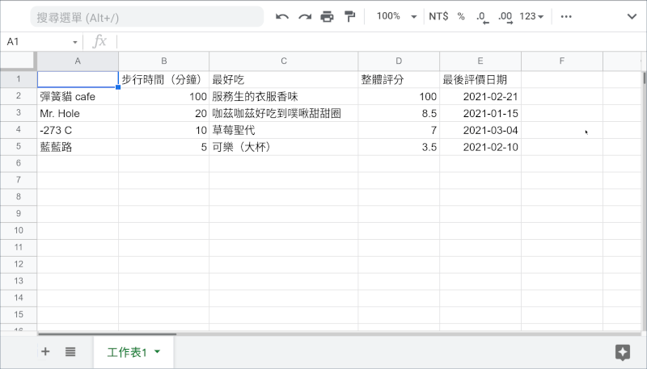
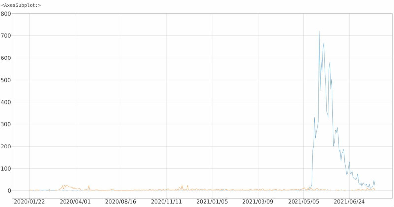
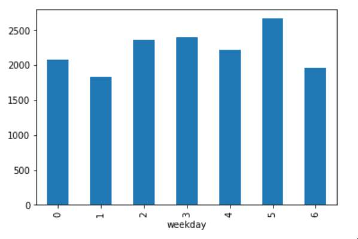
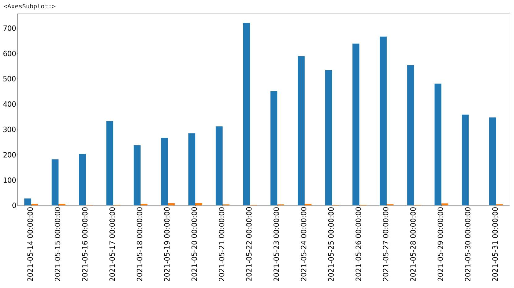

不是，至少這裡不是。
Pandas 是 Python 程式語言的資料處理、數據分析開源套件之一。它提供一個類似電子試算表的資料結構，讓使用者可以輕鬆的查閱、運算、調整或作圖（依賴外部套件）。
Pandas 被廣泛的應用在 python 的資料處理、科學運算、統計分析等等領域，說是 Python 資料科學的核心也不為過。
由於近似於電子試算表， Pandas 特別擅長於描述統計學 ，與 Matplotlib 通力合作可輕鬆將資料視覺化呈現。另外它對時間及日期格式的支援也相當豐富，因此商業實務上經常會用到的時間序列分析 Pandas 也是得心應手。
更別提它讀取和處理大量資料的速度在 Python 套件中也是數一數二，作為後續機器學習、統計推論等等的資料中繼處理站也相當合適。
本文主旨是帶大家快速看過基本的操作，未來要用到時有個印象「噢！Pandas 好像能做到這個」這樣。
容易混淆的、從字面上比較難懂的、以及自創詞會在該詞中文第一次出現時在後方括號裡附上原文，例如類型（ class ）與類別（ type ）。每當我寫到「類型」時就不會是「類別」，反之亦然。另外 Pandas 與 Python 這種專有名詞我會保留原文。
接下來會大量提到 Pandas 的函式與物件。在本文提到的應用程式接口（ Application Programming Interface, 下稱 API ）都是不完整的，但在第一次介紹時我會附上其官方文件的連結。官方文件裡會對該 API 做完整且詳盡的介紹，有興趣者請隨連結查閱。另外，本文中如果是 DataFrame 用到該方法，連結就會把我們帶到 DataFrame 的該方法 API 頁面。但是事實上有相當多的方法若 DataFrame 有，Series 也會有相同功能但專屬於它自己的版本，反之亦然。這部份還請大家多留意。
內文與標題會有一些使用等寬、無裝飾、且帶有底色的英文字串，那些字代表你可以在 Python 程式碼手稿（ script ）或互動式指令介面（ interactive shell ）裡用完全相同的語句參照（ reference ）到該物件、又或是代表程式語言相關的字詞（例如：int 類別），或者終端機（ terminal ）指令。另外，內文與標題的模組（ module ）名稱會是全名，跟程式碼區塊中的有所不同。底下安裝與匯入一節有做說明。
Python 程式碼範例的部份，考慮到精簡、易懂與泛用，本文會使用 IPython 指令介面的書寫格式：
In [N}: 代表人手輸入的第一行，N 是一個數字，代表是這個 IPython 指令介面對談（ session ，或稱工作階段）中的第 N 個指令...: 用於表示一行沒有完成的程式碼區塊Out[M]: 第 M 個輸入（ In [M]: ）的輸出例如：
In [1]: a = {
...: 'a': 'apple',
...: 'b': 'banana'
...: }
In [2]: a
Out[2]: {'a': 'apple', 'b': 'banana'}一個 In [N]: 後面連接零個到數個 ...: 標示一個完整的指令。
最方便、適用新手的安裝方式是直接安裝 Anaconda ，它把資料科學需要的工具鏈一次性的幫我們裝好 — 包含 NumPy 、 Pandas 、 Matplotlib 、 與 SciPy 等等。
經由 PyPI 安裝
pip install pandas經由 Conda 安裝 — 若你安裝的是 Miniconda 的話
conda install pandas其他的安裝方式請洽官方網站的安裝指引 。
In [1]: import pandas as pd將 Pandas 匯入成「 pd 」是資料科學界的習慣，接下來的程式碼區塊中我將會預設 Pandas 已被匯入成 pd 。
如果你曾經用過微軟的 Excel 、Apple 的 Numbers ，Pandas 處理資料的方式就長差不多那樣 — 一張二維的巨大表單。這張表單的每一行、每一列都有其獨一無二的名稱，行與列的名稱並不算資料內容，僅用來定位資料。
這張資料表在 Pandas 裡面稱為 DataFrame ，而每一欄位的資料內容（整行）單獨抽取出來叫做 Series 。
我們可以用字典（ dict ）來製作 DataFrame 。字典的鍵是 DataFrame 欄（ column ）的名稱，該鍵的值（ value ）即為該欄位的資料，index 這個位置參數則指定每一列（ row ）的名稱。
例如，這是我對我家附近幾間餐廳的評價：
In [2]: df = pd.DataFrame({
...: '步行時間（分鐘）': [100, 20, 10, 5],
...: '最好吃': ['服務生的衣服香味', '咖茲咖茲好吃到噗啾甜甜圈', '草莓聖代', '可樂（大杯）'],
...: '整體評分': [100.0, 8.5, 7.0, 3.5],
...: '最後評價日期': ['2021-02-21', '2021-01-15', '2021-03-04', '2021-02-10']
...: },
...: index=['彈簧貓 Cofe', 'Mr. Hole', '-273 C', '藍藍路'])
In [3]: df
Out[3]:
步行時間（分鐘） 最好吃 整體評分 最後評價日期
彈簧貓 Cofe 100 服務生的衣服香味 100.0 2021-02-21
Mr. Hole 20 咖茲咖茲好吃到噗啾甜甜圈 8.5 2021-01-15
-273 C 10 草莓聖代 7.0 2021-03-04
藍藍路 5 可樂（大杯） 3.5 2021-02-10就差不多是這個意思：

將其中一欄取出，我們會得到 Series ：
In [4]: df['整體評分']
Out[4]:
彈簧貓 Cof'e 100.0
Mr. Hole 8.5
-273 C 7.0
藍藍路 3.5
Name: 整體評分, dtype: float64如果你熟悉 Python 的字典，這個語法是完全一樣的。
（由於欄位名稱是資料表的屬性之一，我們也可以利用 df.整體評分 來做到同樣的事。）
當然，你可以使用串列主動製作一個 Series ：
In [5]: pd.Series([5, 10, 15, 20], name='五的倍數')
Out[5]:
0 5
1 10
2 15
3 20
Name: 五的倍數, dtype: int64然後再把 Series 插入或將許多 Series 組合成一個 DataFrame 。
要注意的是，如果把 index 這個參數省略，預設列的名稱（也就是資料列的索引）會是 0, 1, 2, 3, … 的數字。
「打字好沒效率喔！我想要直接把資料從檔案讀入。」
Pandas 提供不少種檔案類型可以直接輸入，也提供不少種檔案類型可以輸出。常見的類型包含： csv 、 JSON 、 Excel ，甚至透過 API 直接跟關聯式資料庫請求資料。
本例使用的資料集是政府資料開放平台的「地區年齡性別統計表-嚴重特殊傳染性肺炎-依個案研判日統計」資料集，於西元 2021 年 7 月 23 日晚間 11:53 取得。
我們可以利用 pandas.read_csv 函式將資料從逗號分隔值檔案中讀入：
In [6]: covid = pd.read_csv('data/Day_Confirmation_Age_County_Gender_19CoV.csv')
In [7]: covid
Out[7]:
確定病名 個案研判日 縣市 鄉鎮 性別 是否為境外移入 年齡層 確定病例數
0 嚴重特殊傳染性肺炎 2020/01/22 空值 空值 女 是 55-59 1
1 嚴重特殊傳染性肺炎 2020/01/24 空值 空值 女 是 50-54 1
2 嚴重特殊傳染性肺炎 2020/01/24 空值 空值 男 是 55-59 1
3 嚴重特殊傳染性肺炎 2020/01/26 空值 空值 女 是 55-59 1
4 嚴重特殊傳染性肺炎 2020/01/27 空值 空值 女 是 50-54 1
... ... ... ... ... .. ... ... ...
10999 嚴重特殊傳染性肺炎 2021/07/22 新北市 板橋區 男 否 25-29 1
11000 嚴重特殊傳染性肺炎 2021/07/22 新北市 板橋區 男 否 30-34 1
11001 嚴重特殊傳染性肺炎 2021/07/22 新北市 泰山區 男 否 45-49 1
11002 嚴重特殊傳染性肺炎 2021/07/22 新北市 淡水區 男 否 35-39 1
11003 嚴重特殊傳染性肺炎 2021/07/22 新北市 樹林區 女 否 35-39 1
[11004 rows x 8 columns]pandas.to_excel 這個函式可以將 DataFrame 匯出成 Excel 的專屬檔案。
In [8]: covid.to_excel('covid.xlsx', sheet_name='Covid', index=False)sheet_name 這個參數用來更改分頁的名稱、index 可為 True 或 False ，若 True 則會把資料列的索引值填入第一行。
註： 匯出成 Excel 檔需要用到 openpyxl 這個套件的協助。
read_* 與 to_* 函式Pandas 很貼心的把所有讀入的函式都寫成 pandas.read_* 、所有匯出的函式都寫成 pandas.to_* 。
這兩個方法的 * 符號可以帶入有支援的各種檔案類型或目標。
舉例來說，若要把剛剛右鍵複製下來的資料讀入，使用 pandas.read_clipboard ；想把資料匯出成 json 檔則使用 pandas.to_json 。
至於到底支援哪些檔案或來源以及如何使用，官方的輸出入工具列表有做詳盡的介紹。
資料入後我們總是會想看看有沒有出問題，我們可以選擇直接印出。DataFrame 被直接印出時，若 Pandas 判斷資料列過多，會像上面的例子一樣 — 頭尾各取 5 列、中間用 … 表示有跳行。
如果我們想看看資料的最上面或最下面，可以利用 DataFrame 的 head 和 tail 方法達成。
head 與 tail 可以接受一個整數作為參數，標示你要看幾行（預設是一次看 5 行）。
In [9]: covid.head(8)
Out[9]:
確定病名 個案研判日 縣市 鄉鎮 性別 是否為境外移入 年齡層 確定病例數
0 嚴重特殊傳染性肺炎 2020/01/22 空值 空值 女 是 55-59 1
1 嚴重特殊傳染性肺炎 2020/01/24 空值 空值 女 是 50-54 1
2 嚴重特殊傳染性肺炎 2020/01/24 空值 空值 男 是 55-59 1
3 嚴重特殊傳染性肺炎 2020/01/26 空值 空值 女 是 55-59 1
4 嚴重特殊傳染性肺炎 2020/01/27 空值 空值 女 是 50-54 1
5 嚴重特殊傳染性肺炎 2020/01/28 空值 空值 女 是 70+ 2
6 嚴重特殊傳染性肺炎 2020/01/28 彰化縣 和美鎮 男 否 50-54 1
7 嚴重特殊傳染性肺炎 2020/01/30 南投縣 南投市 女 否 40-44 1我們可以用 shape 這個屬性來知道這份資料表有多大：
In [10]: covid.shape
Out[10]: (11004, 8)看起來我們有 1,1004 筆資料，每筆資料包含 8 個資料欄位。
describe 方法可以自動幫我們做一些簡單的統計：
In [11]: covid.describe()
Out[11]:
確定病例數
count 11004.000000
mean 1.411759
std 1.191373
min 1.000000
25% 1.000000
50% 1.000000
75% 1.000000
max 23.000000預設的情況下，只有數字型態（ numeric ）的資料欄會被列入計算。我們只有「確定病例數」是數字型態的資料欄位，自然也只有這一欄的結果。
info 方法則會給我們技術方面的資訊：
In [12]: covid.info()
<class 'pandas.core.frame.DataFrame'>
RangeIndex: 11004 entries, 0 to 11003
Data columns (total 8 columns):
# Column Non-Null Count Dtype
--- ------ -------------- -----
0 確定病名 11004 non-null object
1 個案研判日 11004 non-null object
2 縣市 11004 non-null object
3 鄉鎮 11004 non-null object
4 性別 11004 non-null object
5 是否為境外移入 11004 non-null object
6 年齡層 11004 non-null object
7 確定病例數 11004 non-null int64
dtypes: int64(1), object(7)
memory usage: 687.9+ KB我們可以看到各欄位的資料類型 — 前七欄為 object 、最後一欄為 int64 （ 64 位元整數）。
前七欄是 object 的原因是因為它們都是 Python 的字串（ str ）。
covid 的確是個 DataFrame值得注意的是，若 memory usage 出現 + 號（就像這個例子），代表實際佔用的記憶體比顯示的還多。想確知真正佔用的記憶體大小，請把 memory_usage='deep' 作為參數呼叫 info 。
除了類似字典取值，選取單個欄位的語法外， DataFrame 也提供一次選取多個欄位的語法。
比如說，我們對「個案研判日」以及「確定病例數」有興趣：
In [13]: covid[['個案研判日', '確定病例數']].head()
Out[13]:
個案研判日 確定病例數
0 2020/01/22 1
1 2020/01/24 1
2 2020/01/24 1
3 2020/01/26 1
4 2020/01/27 1語法是 DataFrame 後面接上一個中括號（如同原生 Python 的切片語法），中括號內放入包含欄位名稱的串列。
經過觀察後，我們會發現第一欄「確定病名」全部都是「嚴重特殊傳染性肺炎」，這欄基本上沒有存在的意義。
我們不要看它：
In [14]: new_cols = covid.columns.drop('確定病名')
In [15]: new_cols
Out[15]: Index(['個案研判日', '縣市', '鄉鎮', '性別', '是否為境外移入', '年齡層', '確定病例數'], dtype='object')
In [16]: covid[new_cols].head()
Out[16]:
個案研判日 縣市 鄉鎮 性別 是否為境外移入 年齡層 確定病例數
0 2020/01/22 空值 空值 女 是 55-59 1
1 2020/01/24 空值 空值 女 是 50-54 1
2 2020/01/24 空值 空值 男 是 55-59 1
3 2020/01/26 空值 空值 女 是 55-59 1
4 2020/01/27 空值 空值 女 是 50-54 1這裡我們利用 DataFrame.columns 這個屬性。這個屬性會回傳一個 pandas.Index 物件，裡面是所有的欄位名稱。
再來我們利用 Index 物件的 drop 方法把「確定病名」刪除。刪除後就可以利用新的欄位選取列表來選擇我們想要的資料欄。
我們可以在 DataFrame 後面接中括弧，中括弧裡使用「索引:另一個索引」這樣的語法來取得特定範圍內的資料列。
還記得我的餐廳評價表嗎？如果我們吃膩藍藍路，現在完全不想考慮它，我們可以這樣選：
In [17]: df['彈簧貓 Cofe':'-273 C']
Out[17]:
步行時間（分鐘） 最好吃 整體評分 最後評價日期
彈簧貓 Cofe 100 服務生的衣服香味 100.0 2021-02-21
Mr. Hole 20 咖茲咖茲好吃到噗啾甜甜圈 8.5 2021-01-15
-273 C 10 草莓聖代 7.0 2021-03-04又或是我們對特定範圍的 Covid-19 有興趣：
In [18]: covid[500:503]
Out[18]:
確定病名 個案研判日 縣市 鄉鎮 性別 是否為境外移入 年齡層 確定病例數
500 嚴重特殊傳染性肺炎 2020/11/28 空值 空值 女 是 45-49 1
501 嚴重特殊傳染性肺炎 2020/11/28 空值 空值 男 是 20-24 1
502 嚴重特殊傳染性肺炎 2020/11/29 空值 空值 女 是 20-24 1注意到了嗎？由於剛才我們建立 covid 這個資料表的時候沒有指定 index 參數，所以 Pandas 主動幫每個資料列補上一個整數作為索引。
假設我們對第 1000 到第 1010 筆資料的性別、年齡層與確定病例數有興趣：
In [19]: covid[1000:1011][['性別', '年齡層', '確定病例數']]
Out[19]:
性別 年齡層 確定病例數
1000 女 40-44 1
1001 女 55-59 1
1002 女 25-29 1
1003 女 35-39 1
1004 男 20-24 2
1005 男 25-29 6
1006 男 30-34 1
1007 男 40-44 1
1008 女 70+ 1
1009 女 40-44 1
1010 男 35-39 1原理是先用 covid[1000:1011] 將第 1000 到 1010 筆資料列提取出來，再選取想要的欄位。
DataFrame.ilocDataFrame 的 iloc 屬性提供一個用數字索引資料的方法，索引的數字代表資料欄或列所在的位置：
In [20]: df.iloc[:3, 2:]
Out[20]:
整體評分 最後評價日期
彈簧貓 Cofe 100.0 2021-02-21
Mr. Hole 8.5 2021-01-15
-273 C 7.0 2021-03-04索引前三列的第三欄之後。
In [21]: covid.iloc[1000:1011, [1, 4, 6, 7]]
Out[21]:
個案研判日 性別 年齡層 確定病例數
1000 2021/05/13 女 40-44 1
1001 2021/05/13 女 55-59 1
1002 2021/05/13 女 25-29 1
1003 2021/05/13 女 35-39 1
1004 2021/05/13 男 20-24 2
1005 2021/05/13 男 25-29 6
1006 2021/05/13 男 30-34 1
1007 2021/05/13 男 40-44 1
1008 2021/05/13 女 70+ 1
1009 2021/05/13 女 40-44 1
1010 2021/05/13 男 35-39 1索引第 1000 到第 1010 列的第二、五、七、八欄。
注意 iloc 屬性索引用的是中括弧。
iloc 屬性的索引可以分為兩個維度。若是兩個維度的索引則使用一個逗號「 , 」將第一維度（資料列）與第二維度（資料欄）分開。
若是只有給予一個維度，會索引資料列的所有欄位。
可以拿來索引的東西有：
Slice 物件（也就是平常在使用的 start:stop[:step] 這個語法實際產生的東西）[True, True, False, ... ] ）DataFrame.lociloc 屬性提供數字方式的索引，DataFrame 的 loc 屬性提供使用欄與列的名稱來進行索引。
In [22]: df.loc[['Mr. Hole', '-273 C'], :'整體評分']
Out[22]:
步行時間（分鐘） 最好吃 整體評分
Mr. Hole 20 咖茲咖茲好吃到噗啾甜甜圈 8.5
-273 C 10 草莓聖代 7.0 索引 「 Mr. Hole 」 及 「 -273 C 」這兩列中的 「整體評分」以前的所有欄位。
loc 與 iloc 的索引語法與適用的索引物件一模一樣（不過不是整數，而是用來當索引的物件 — 字串、時間日期等等），唯一要注意的是， loc 的 Slice 物件包含上界。如上例所示， Slice 切取到「整體評分」會把「整體評分」本身也包含進去。
DataFrame.sample如果不想看頭、尾，但是也只是想看看其中一部份的資料列，又或者需要隨機的抽取其中幾筆資料，smaple 方法是我們好朋友。
抽取 5 筆資料：
In [23]: covid.sample(5)
Out[23]:
確定病名 個案研判日 縣市 鄉鎮 性別 是否為境外移入 年齡層 確定病例數
10547 嚴重特殊傳染性肺炎 2021/07/05 台北市 萬華區 女 否 55-59 1
10653 嚴重特殊傳染性肺炎 2021/07/09 台北市 大同區 男 否 25-29 1
3301 嚴重特殊傳染性肺炎 2021/05/25 台北市 內湖區 男 否 65-69 1
6861 嚴重特殊傳染性肺炎 2021/06/05 台中市 霧峰區 女 否 5-9 2
335 嚴重特殊傳染性肺炎 2020/07/17 空值 空值 男 是 40-44 1抽取萬分之三的資料：
In [24]: covid.sample(frac=.0003)
Out[24]:
確定病名 個案研判日 縣市 鄉鎮 性別 是否為境外移入 年齡層 確定病例數
7496 嚴重特殊傳染性肺炎 2021/06/07 新北市 中和區 女 否 65-69 1
8009 嚴重特殊傳染性肺炎 2021/06/10 南投縣 草屯鎮 男 否 40-44 1
6360 嚴重特殊傳染性肺炎 2021/06/03 桃園市 桃園區 男 否 70+ 1利用百分比隨機抽選資料的功能在分離訓練集和測試集的時候特別好用。
DataFrame 與 Series 實作了不少統計與計算相關的方法，讓我們使用者方便不少。
isna 這個方法可以回傳一個相同大小的 DataFrame 或 Series ，用True 和 False 標示出哪些地方是缺失值。由於 True 在加法運算中視為整數 1 ； False 在加法運算中視為整數 0 。我們可以利用 sum 方法來獲知某一欄的缺失值有幾個。
以我們的 covid 資料表為例：
In [25]: covid.head()
Out[25]:
確定病名 個案研判日 縣市 鄉鎮 性別 是否為境外移入 年齡層 確定病例數
0 嚴重特殊傳染性肺炎 2020/01/22 空值 空值 女 是 55-59 1
1 嚴重特殊傳染性肺炎 2020/01/24 空值 空值 女 是 50-54 1
2 嚴重特殊傳染性肺炎 2020/01/24 空值 空值 男 是 55-59 1
3 嚴重特殊傳染性肺炎 2020/01/26 空值 空值 女 是 55-59 1
4 嚴重特殊傳染性肺炎 2020/01/27 空值 空值 女 是 50-54 1我們來找「縣市」這欄的缺失值有幾個：
In [26]: covid.縣市.isna().sum()
Out[26]: 0（這裡用的是 Series 的 isna ）
0 個！怎麼會這樣？上面不是都說「空值」了嗎？
沒有錯，欄位裡面是寫「空值」，但是那是中文字的「空值」。對 Pandas 來說（事實上對任何程式語言來說），內容為「空值」的字串是有值的。
用來標示空值的符號可以是 pandas.NA 、 pandas.NaT （用於日期格式缺失）、 None 等等類型。
所以這裡我們要用 isin ：
In [27]: covid.縣市.isin(['空值']).sum()
Out[27]: 1044「縣市」這欄總共有 1,044 筆資料是「空值」。我們可以進一步利用這個結果：
In [28]: covid.縣市.isin(['空值']).sum() / covid.縣市.count()
Out[28]: 0.09487459105779716只有百分之九點四的值是「空值」。看來剛剛一直只看前面幾個，好像縣市都是「空值」這個印象是錯誤的。（事實上唯有境外移入才會被紀錄為「空值」）
「確定病例數」這一欄是個數字，我們可以利用 sort_values 方法來協助我們。
In [29]: covid.確定病例數.sort_values().tail()
Out[29]:
3026 18
1366 20
2386 20
2385 21
7254 23
Name: 確定病例數, dtype: int64sort_values 預設行為是數字越大越後面，我們可以利用 tail 方法來查看最後面（也就是最大）的幾個。
這邊需要注意的是，正好「確定病例數」這一欄並沒有缺失值，如果有，預設情況下會是放在最後面。這時候我們就需要一些前置處理改善情況。
既然都抓到最大幾筆的個案，我們來看看它們：
In [30]: largest_ones = covid.確定病例數.sort_values().tail().index
In [31]: covid.loc[largest_ones]
Out[31]:
確定病名 個案研判日 縣市 鄉鎮 性別 是否為境外移入 年齡層 確定病例數
3026 嚴重特殊傳染性肺炎 2021/05/24 台北市 萬華區 女 否 50-54 18
1366 嚴重特殊傳染性肺炎 2021/05/17 台北市 萬華區 女 否 50-54 20
2386 嚴重特殊傳染性肺炎 2021/05/22 台北市 萬華區 女 否 55-59 20
2385 嚴重特殊傳染性肺炎 2021/05/22 台北市 萬華區 女 否 50-54 21
7254 嚴重特殊傳染性肺炎 2021/06/06 苗栗縣 竹南鎮 男 否 30-34 23最大五筆裡面有四筆是台北市萬華區，也差不多是 2021 年疫情爆發的初期，與印象相符。
上面我提到「經過觀察後，我們會發現第一欄『確定病名』全部都是『嚴重特殊傳染性肺炎』」。這件事是真的嗎？還是我騙了你呢？現在我們就來檢驗這件事。
首先我們要知道（如上面 isna 章節所述），對 Series 進行邏輯運算，回傳的結果會是個同樣長度的 Series ，並且內容是各個元素進行邏輯運算的結果。
舉例來說，我們有這個 Series ：
In [32]: s = pd.Series([1, -3, 0, 1, -5])對 s 做邏輯運算：
In [33]: s_filter = s < 0
In [34]: s_filter
Out[34]:
0 False
1 True
2 False
3 False
4 True
dtype: bool我們會得到一排 True 與 False 。
這排 True 與 False 正巧是 s 的索引可以接受的東西：
In [35]: s[s_filter]
Out[35]:
1 -3
4 -5
dtype: int64這樣子我們就把任何小於零的元素過濾出來了。
同理，我們來看看「確定病名」不為「嚴重特殊傳染性肺炎」的資料列有幾列吧！
In [36]: covid.確定病名[covid.確定病名 != '嚴重特殊傳染性肺炎'].count()
Out[36]: 00 。我沒有騙你。=)
所謂東部所指通常是宜蘭縣、花蓮縣、及台東縣。我們將會使用 isin 方法從「縣市」這欄過濾出地理區域。再藉由計算地區確定病例總數與全台灣確定病例總數的比值推斷東部疫情的嚴重程度。
你問我境外移入的病例算入總數嗎？基於當時花蓮國皇后把從外縣市傳入的病例稱為「境外移入」，我們就通通摻在一起算吧！
首先要挑出東部地區：
In [37]: eastern = covid[covid.縣市.isin(['宜蘭縣', '花蓮縣', '台東縣'])]
In [38]: eastern.sample()
Out[38]:
確定病名 個案研判日 縣市 鄉鎮 性別 是否為境外移入 年齡層 確定病例數
4064 嚴重特殊傳染性肺炎 2021/05/27 台東縣 太麻里鄉 女 否 60-64 1再來將東部地區病例總數總和拿去除以全台灣病例總數：
In [39]: eastern.確定病例數.sum() / covid.確定病例數.sum()
Out[39]: 0.012101705825555198整個東部地區只有佔總病例數的 1.2% ，真的是淨土啊！
Series.isin 方法可以接受一個串列，並回傳一個等長的 Series 標示每個元素是否與該串列內容的其中一個值相同。想要挑選特定的幾個值的話 isin 很好用。
「我看起來常常一天內會有數起個案，每個個案又不一定是同樣數量的病例數，難道我要把每一天都分割出來再加總嗎？」
別擔心！ DataFrame 有個方法叫 groupby 專門做這種事。 groupby 可以傳入一個或多個欄位名稱，它會馬上回傳一個 SeriesGroupBy 物件。我們不用知道這個物件是什麼，我們只需要知道在概念上，這個 DataFrame 已經照著我們的吩咐進行分類了。只是說分類好的數字 Pandas 暫時還不知道要拿他們怎麼辦。
這時我們可以在該物件後面接上欄位名稱與運算方法來產出結果。
也就是說，我們要先把每個資料列照「個案研判日」分群（ groupby ），然後針對「確定病例數」這欄加總：
n [148]: covid.groupby('個案研判日').確定病例數.sum()
Out[148]:
個案研判日
2020/01/22 1
2020/01/24 2
2020/01/26 1
2020/01/27 1
2020/01/28 3
..
2021/07/18 18
2021/07/19 21
2021/07/20 24
2021/07/21 58
2021/07/22 24
Name: 確定病例數, Length: 379, dtype: int64出來的結果就是每日確診病例數字。
證據就是，2020/01/28 這天的三例病例是由兩個個案組成的。
In [40]: covid[covid.個案研判日 == '2020/01/28']
Out[40]:
確定病名 個案研判日 縣市 鄉鎮 性別 是否為境外移入 年齡層 確定病例數
5 嚴重特殊傳染性肺炎 2020/01/28 空值 空值 女 是 70+ 2
6 嚴重特殊傳染性肺炎 2020/01/28 彰化縣 和美鎮 男 否 50-54 1接下來，這是用「個案研判日」和「是否為境外移入」兩項標籤分類出的病例數目：
In [41]: covid.groupby(['個案研判日', '是否為境外移入']).確定病例數.sum().head(10)
Out[41]:
個案研判日 是否為境外移入
2020/01/22 是 1
2020/01/24 是 2
2020/01/26 是 1
2020/01/27 是 1
2020/01/28 否 1
是 2
2020/01/30 否 1
2020/01/31 是 1
2020/02/04 是 1
2020/02/06 是 3
Name: 確定病例數, dtype: int64可以看到 2020/01/28 這天有兩個病例是境外移入、一個是本土。
請對分群完的欄位使用 agg 方法。該方法可以接受多個統計或計算方法，並把結果以欄位分開顯示：
In [42]: covid.groupby('個案研判日').確定病例數.agg(['count', 'sum'])
Out[42]:
count sum
個案研判日
2020/01/22 1 1
2020/01/24 2 2
2020/01/26 1 1
2020/01/27 1 1
2020/01/28 2 3
... ... ...
2021/07/18 17 18
2021/07/19 20 21
2021/07/20 23 24
2021/07/21 48 58
2021/07/22 21 24
[379 rows x 2 columns]這裡我們可以看到，例如 2021/07/21 ，有 48 筆個案、 58 筆病例。
由於 agg 回傳的是一個 Series 或 DataFrame ，可以繼續進行加工以獲得更進一步的資訊（例如排序等等）。
DataFrame.pivot_table 方法正是設計來做樞紐分析！
比如說，我想輕鬆的觀察每天的境外移入和本土病例數目：
In [43]: covid.pivot_table(index='個案研判日', columns='是否為境外移入', values='確定病例數', aggfunc='sum')
Out[43]:
是否為境外移入 否 是
個案研判日
2020/01/22 NaN 1.0
2020/01/24 NaN 2.0
2020/01/26 NaN 1.0
2020/01/27 NaN 1.0
2020/01/28 1.0 2.0
... ... ...
2021/07/18 15.0 3.0
2021/07/19 15.0 6.0
2021/07/20 18.0 6.0
2021/07/21 46.0 12.0
2021/07/22 23.0 1.0
[379 rows x 2 columns]index 參數指定透視表的索引欄、columns 指定作為透視表欄位的欄位、values 指定透視表的數值部份、aggfunc 指定索引欄相同的 values 值要怎麼合併。
如果需要總合數字，可以將 margins 設定為 True 製作透視表：
In [44]: covid.pivot_table(index='個案研判日', columns='是否為境外移入', values='確定病例數', aggfunc='sum', margins=True)
Out[44]:
是否為境外移入 否 是 All
個案研判日
2020/01/22 NaN 1.0 1
2020/01/24 NaN 2.0 2
2020/01/26 NaN 1.0 1
2020/01/27 NaN 1.0 1
2020/01/28 1.0 2.0 3
... ... ... ...
2021/07/19 15.0 6.0 21
2021/07/20 18.0 6.0 24
2021/07/21 46.0 12.0 58
2021/07/22 23.0 1.0 24
All 14228.0 1307.0 15535
[380 rows x 3 columns]如此一來，資料就看得比用 groupby 做出來的清楚多了。
Pandas 直接把 API 接到模組裡面，我們只要呼叫 DataFrame.plot 方法就能直接作圖（在 Jupyter Notebook 裡面的話啦…）。
covid.pivot_table(index='個案研判日',
columns='是否為境外移入',
values='確定病例數',
aggfunc='sum').plot(xlabel='',
figsize=(50, 25),
fontsize='40',
legend=False,
grid=True,
yticks=range(0, 801, 100))
橘色線是境外移入、藍色線是本土。老實說我遇到中文字型不支援的麻煩，所以我把圖標和橫軸都關掉了。
從這張圖可以清楚看見，在 2021 年五月中之前臺灣的疫情其實控制的相當好。
Pandas 繪圖依賴的是 Matplotlib ，當我們呼叫 DataFrame.plot 方法時可以當作在呼叫 Matplotpib.pyplot.plot 這個函式，只不過資料可以交由 Pandas 自動送入。
另外，若不習慣用 kind 參數指定繪圖類型的話，我們可以用 DataFrame.plot.scatter 畫出散點圖、 DataFrame.plot.hist 畫出長條圖、DataFrame.plot.area 畫出面積圖等等。詳細的所有方法請參考這裡
plot 方法雖然很方便，但是選擇有限。作為一個快速觀察很方便，但是要發揮全部的繪圖威力還是得使用專門繪圖的套件。
稍早我們確認「確定病名」這欄的所有資料都一模一樣。換句話說，這一欄基本上沒有存在的必要。我們現在來刪除它：
In [45]: del covid['確定病名']
In [46]: covid.head()
Out[46]:
個案研判日 縣市 鄉鎮 性別 是否為境外移入 年齡層 確定病例數
0 2020/01/22 空值 空值 女 是 55-59 1
1 2020/01/24 空值 空值 女 是 50-54 1
2 2020/01/24 空值 空值 男 是 55-59 1
3 2020/01/26 空值 空值 女 是 55-59 1
4 2020/01/27 空值 空值 女 是 50-54 1del 陳述句與 drop 方法都可以做到刪除欄位的效果，刪除列也是。
為 DataFrame 新增欄位的方式跟字典一模一樣：
In [47]: covid['new_col'] = range(len(covid))
In [48]: covid.tail()
Out[48]:
個案研判日 縣市 鄉鎮 性別 是否為境外移入 年齡層 確定病例數 new_col
10999 2021/07/22 新北市 板橋區 男 否 25-29 1 10999
11000 2021/07/22 新北市 板橋區 男 否 30-34 1 11000
11001 2021/07/22 新北市 泰山區 男 否 45-49 1 11001
11002 2021/07/22 新北市 淡水區 男 否 35-39 1 11002
11003 2021/07/22 新北市 樹林區 女 否 35-39 1 11003這種方式建立的欄位會接在整個表的最最右邊。如果想要把資料欄安放在中間的位置，請使用 insert 方法。
DataFrame 的 rename 方法可以輕鬆的命名欄與列的名稱：
In [49]: covid = covid.rename(columns={'個案研判日': 'Date',
...: '縣市': 'City/Country',
...: '鄉鎮': 'Township',
...: '性別': 'Sex',
...: '是否為境外移入': 'Local/Abroad',
...: '年齡層': 'Age_group',
...: '確定病例數': 'Case'})
Out[12]:
Date City/Country Township Sex Local/Abroad Age_group Case new_col
0 2020/01/22 空值 空值 女 是 55-59 1 0
1 2020/01/24 空值 空值 女 是 50-54 1 1
2 2020/01/24 空值 空值 男 是 55-59 1 2
3 2020/01/26 空值 空值 女 是 55-59 1 3
4 2020/01/27 空值 空值 女 是 50-54 1 4
... ... ... ... .. ... ... ... ...
10999 2021/07/22 新北市 板橋區 男 否 25-29 1 10999
11000 2021/07/22 新北市 板橋區 男 否 30-34 1 11000
11001 2021/07/22 新北市 泰山區 男 否 45-49 1 11001
11002 2021/07/22 新北市 淡水區 男 否 35-39 1 11002
11003 2021/07/22 新北市 樹林區 女 否 35-39 1 11003
[11004 rows x 8 columns]「我是瑪雅人，使用二十進位是我的驕傲！」
沒有問題，我們把數字都轉成 20 進位。
首先我們先定義 20 進位的數字為「 0 1 2 3 4 5 6 7 8 9 A B C D E F G H I J 」，再來我們需要一個轉換器：
In [50]: def dec_to_vig(n):
...: a = ['0', '1', '2', '3', '4', '5', '6', '7', '8', '9',
...: 'A', 'B', 'C', 'D', 'E', 'F', 'G', 'H', 'I', 'J']
...: res = []
...: while n // 20 >= 1:
...: res.append(a[n % 20])
...: n //= 20
...: if n != 0:
...: res.append(a[n])
...: return ''.join(res[::-1])接著我們要把這個函式套用在欄位中的每一個元素，這個步驟需要 apply 這個方法來幫忙：
In [51]: covid_maya = covid.copy()
In [52]: covid_maya['Case'] = covid_maya['Case'].apply(dec_to_vig)
In [53]: covid_maya.loc[covid.sort_values('Case').tail().index]
Out[53]:
Date City/Country Township Sex Local/Abroad Age_group Case new_col
3026 2021/05/24 台北市 萬華區 女 否 50-54 I 3026
1366 2021/05/17 台北市 萬華區 女 否 50-54 10 1366
2386 2021/05/22 台北市 萬華區 女 否 55-59 10 2386
2385 2021/05/22 台北市 萬華區 女 否 50-54 11 2385
7254 2021/06/06 苗栗縣 竹南鎮 男 否 30-34 13 7254
In [54]: covid.sort_values('Case').tail()
Out[54]:
Date City/Country Township Sex Local/Abroad Age_group Case new_col
3026 2021/05/24 台北市 萬華區 女 否 50-54 18 3026
1366 2021/05/17 台北市 萬華區 女 否 50-54 20 1366
2386 2021/05/22 台北市 萬華區 女 否 55-59 20 2386
2385 2021/05/22 台北市 萬華區 女 否 50-54 21 2385
7254 2021/06/06 苗栗縣 竹南鎮 男 否 30-34 23 7254這樣就完成「 Case 」這一欄了！
什麼？其他欄？身為驕傲的瑪雅人你應該自己完成！
例如說，我很無聊，我把最後五列疊放在最上面：
In [55]: covid2 = covid.copy()[-5:]
In [56]: pd.concat([covid2, covid]).head(10)
Out[56]:
確定病名 個案研判日 縣市 鄉鎮 性別 是否為境外移入 年齡層 確定病例數
10999 嚴重特殊傳染性肺炎 2021/07/22 新北市 板橋區 男 否 25-29 1
11000 嚴重特殊傳染性肺炎 2021/07/22 新北市 板橋區 男 否 30-34 1
11001 嚴重特殊傳染性肺炎 2021/07/22 新北市 泰山區 男 否 45-49 1
11002 嚴重特殊傳染性肺炎 2021/07/22 新北市 淡水區 男 否 35-39 1
11003 嚴重特殊傳染性肺炎 2021/07/22 新北市 樹林區 女 否 35-39 1
0 嚴重特殊傳染性肺炎 2020/01/22 空值 空值 女 是 55-59 1
1 嚴重特殊傳染性肺炎 2020/01/24 空值 空值 女 是 50-54 1
2 嚴重特殊傳染性肺炎 2020/01/24 空值 空值 男 是 55-59 1
3 嚴重特殊傳染性肺炎 2020/01/26 空值 空值 女 是 55-59 1
4 嚴重特殊傳染性肺炎 2020/01/27 空值 空值 女 是 50-54 1利用 pandas.concat 可以許多個表疊放在一起。 concat 的輸入的串列中，第一個 DataFrame 會放在最上面，再來是第二個、第三個，以此類推。預設方向是垂直疊放，若需要水平疊放請把位置參數 axis 設為 1 。
疊放有兩點要注意：首先，它並不主動合併索引值、第二，若資料並不整齊，缺失值 Pandas 會用 pandas.NA 補上。
In [57]: df2 = pd.DataFrame({0: [1, 2], 1: [3, 4]})
In [58]: df3 = pd.DataFrame({0: [5], 1: [6], 2: [7]})
In [59]: df2
Out[59]:
0 1
0 1 3
1 2 4
In [60]: df3
Out[60]:
0 1 2
0 5 6 7
In [61]: pd.concat([df2, df3])
Out[61]:
0 1 2
0 1 3 NaN
1 2 4 NaN
0 5 6 7.0這種方式有點像資料庫連接（ join ）的 SELECT 語句。
比如說，我想依據縣市分類每一個個案在台灣的哪一區塊：
首先，我們來製作補充資料的 DataFrame 。
In [62]: area = {
...: '花蓮縣': '東台灣',
...: '台東縣': '東台灣',
...: '基隆市': '北台灣',
...: '台北市': '北台灣',
...: '新北市': '北台灣',
...: '桃園市': '北台灣',
...: '新竹市': '北台灣',
...: '新竹縣': '北台灣',
...: '宜蘭縣': '北台灣',
...: '苗栗縣': '中臺灣',
...: '台中市': '中臺灣',
...: '彰化縣': '中臺灣',
...: '南投縣': '中臺灣',
...: '雲林縣': '中臺灣',
...: '嘉義市': '南臺灣',
...: '嘉義縣': '南臺灣',
...: '台南市': '南臺灣',
...: '高雄市': '南臺灣',
...: '屏東縣': '南臺灣',
...: '澎湖縣': '南臺灣',
...: '連江縣': '金馬',
...: '金門縣': '金馬'}
In [63]: district = pd.DataFrame({'縣市': area.keys(),
...: '區域': area.values()})
In [64]: district.head()
Out[64]:
縣市 區域
0 花蓮縣 東台灣
1 台東縣 東台灣
2 基隆市 北台灣
3 台北市 北台灣
4 新北市 北台灣接下來我們就利用「縣市」這一共通欄位進行合併。
In [65]: covid_has_area = pd.merge(covid, district, how='left', on='縣市')
In [66]: covid_has_area.sample(5)
Out[66]:
確定病名 個案研判日 縣市 鄉鎮 性別 是否為境外移入 年齡層 確定病例數 區域
6428 嚴重特殊傳染性肺炎 2021/06/03 新北市 五股區 女 否 5-9 1 北台灣
2662 嚴重特殊傳染性肺炎 2021/05/23 台北市 中正區 女 否 50-54 1 北台灣
786 嚴重特殊傳染性肺炎 2021/03/15 空值 空值 男 是 25-29 1 NaN
8212 嚴重特殊傳染性肺炎 2021/06/11 桃園市 八德區 男 否 55-59 1 北台灣
8063 嚴重特殊傳染性肺炎 2021/06/10 新北市 三峽區 女 否 30-34 1 北台灣接下來我們就能用區域的觀點進行後續分析啦！
這邊我們用的是 left 的合併方式，也就是只看左邊表格（這裡是 covid ）的鍵值。若有個鍵值只有右邊表格（ district ）有則會被忽略。
更詳細使用 pandas.merge 函式的方式請洽 API 頁面。
Pandas 提供 pandas.Timestamp 類型來紀錄時間日期。我們 covid 表格的「個案研判日」目前還是字串，得先把它用 pandas.to_datetime 函式轉換過去。
In [67]: covid['個案研判日'] = pd.to_datetime(covid['個案研判日'])
In [68]: covid.head()
Out[68]:
確定病名 個案研判日 縣市 鄉鎮 性別 是否為境外移入 年齡層 確定病例數
0 嚴重特殊傳染性肺炎 2020-01-22 空值 空值 女 是 55-59 1
1 嚴重特殊傳染性肺炎 2020-01-24 空值 空值 女 是 50-54 1
2 嚴重特殊傳染性肺炎 2020-01-24 空值 空值 男 是 55-59 1
3 嚴重特殊傳染性肺炎 2020-01-26 空值 空值 女 是 55-59 1
4 嚴重特殊傳染性肺炎 2020-01-27 空值 空值 女 是 50-54 1
In [69]: covid.info()
<class 'pandas.core.frame.DataFrame'>
RangeIndex: 11004 entries, 0 to 11003
Data columns (total 8 columns):
# Column Non-Null Count Dtype
--- ------ -------------- -----
0 確定病名 11004 non-null object
1 個案研判日 11004 non-null datetime64[ns]
2 縣市 11004 non-null object
3 鄉鎮 11004 non-null object
4 性別 11004 non-null object
5 是否為境外移入 11004 non-null object
6 年齡層 11004 non-null object
7 確定病例數 11004 non-null int64
dtypes: datetime64[ns](1), int64(1), object(6)
memory usage: 687.9+ KBIn [70]: covid = pd.read_csv('data/Day_Confirmation_Age_County_Gender_19CoV.csv', parse_dates=["個案研判日"])
Out[70]:
確定病名 個案研判日 縣市 鄉鎮 性別 是否為境外移入 年齡層 確定病例數
0 嚴重特殊傳染性肺炎 2020-01-22 空值 空值 女 是 55-59 1
1 嚴重特殊傳染性肺炎 2020-01-24 空值 空值 女 是 50-54 1
2 嚴重特殊傳染性肺炎 2020-01-24 空值 空值 男 是 55-59 1
3 嚴重特殊傳染性肺炎 2020-01-26 空值 空值 女 是 55-59 1
4 嚴重特殊傳染性肺炎 2020-01-27 空值 空值 女 是 50-54 1
... ... ... ... ... .. ... ... ...
10999 嚴重特殊傳染性肺炎 2021-07-22 新北市 板橋區 男 否 25-29 1
11000 嚴重特殊傳染性肺炎 2021-07-22 新北市 板橋區 男 否 30-34 1
11001 嚴重特殊傳染性肺炎 2021-07-22 新北市 泰山區 男 否 45-49 1
11002 嚴重特殊傳染性肺炎 2021-07-22 新北市 淡水區 男 否 35-39 1
11003 嚴重特殊傳染性肺炎 2021-07-22 新北市 樹林區 女 否 35-39 1
[11004 rows x 8 columns]
In [71]: covid.info()
<class 'pandas.core.frame.DataFrame'>
RangeIndex: 11004 entries, 0 to 11003
Data columns (total 8 columns):
# Column Non-Null Count Dtype
--- ------ -------------- -----
0 確定病名 11004 non-null object
1 個案研判日 11004 non-null datetime64[ns]
2 縣市 11004 non-null object
3 鄉鎮 11004 non-null object
4 性別 11004 non-null object
5 是否為境外移入 11004 non-null object
6 年齡層 11004 non-null object
7 確定病例數 11004 non-null int64
dtypes: datetime64[ns](1), int64(1), object(6)
memory usage: 687.9+ KB如此一來，我們就把「個案研判日」這一欄轉換成 pandas.Timestamp 。這時候我們就可以利用 Series.dt 的一系列方法 進行時間日期專門的相關操作了。
假如我們對日期解析度的要求沒這麼高，也許一個月統計一次就好，我們可以：
In [72]: covid['month'] = covid.個案研判日.dt.month
In [73]: covid.sample(5)
Out[73]:
確定病名 個案研判日 縣市 鄉鎮 性別 是否為境外移入 年齡層 確定病例數 month
5604 嚴重特殊傳染性肺炎 2021-06-01 台北市 大同區 男 否 20-24 1 6
6842 嚴重特殊傳染性肺炎 2021-06-04 新北市 蘆洲區 男 否 45-49 1 6
1902 嚴重特殊傳染性肺炎 2021-05-20 台北市 北投區 男 否 40-44 1 5
1999 嚴重特殊傳染性肺炎 2021-05-20 新北市 中和區 男 否 25-29 1 5
8796 嚴重特殊傳染性肺炎 2021-06-14 新北市 土城區 男 否 20-24 1 6又或者，你想知道是不是週末結束過後確診率會上升：
In [74]: covid['weekday'] = covid.個案研判日.dt.weekday
In [75]: covid.groupby(covid.weekday).確定病例數.sum()
Out[75]:
weekday
0 2075
1 1833
2 2367
3 2402
4 2223
5 2669
6 1966
Name: 確定病例數, dtype: int64
In [76]: covid.groupby(covid.weekday).確定病例數.sum().plot(kind='bar')
Out[76]: <AxesSubplot:xlabel='weekday'>
禮拜一為 0 、禮拜日為 6 。禮拜六確診數量略高一些，但是沒有差太多。該不會是雖然有好好待在家，但好不容易放假，一放鬆免疫力下降？
我們的第一天和最後一天是哪天？
In [77]: (covid.個案研判日.max(), covid.個案研判日.min())
Out[77]: (Timestamp('2021-07-22 00:00:00'), Timestamp('2020-01-22 00:00:00'))我們總共統計幾天？
In [78]: covid.個案研判日.max() - covid.個案研判日.min()
Out[78]: Timedelta('547 days 00:00:00')這個是 UNIX 時間，是從 1970 年 1 月 1 日 0 時 0 分 0 秒起至現在的總秒數，不考慮閏秒。
我們要正確使用這種時間要加 unit="s" ：
In [79]: pd.Timestamp(2147483647, unit='s')
Out[79]: Timestamp('2038-01-19 03:14:07')pandas.Timestamp 作為索引的時候（ pandas.DatetimeIndex 物件），我們可以很方便的調用一段時間的資料。
例如說，不依賴 .dt 取得各資料列年份與星期幾索引值：
In [80]: pivoted = covid.pivot_table(index=pd.to_datetime(covid.個案研判日), columns='是否為境外移入', values='確定病例數', aggfunc='sum')
In [81]: (pivoted.index.year, pivoted.index.weekday)
Out[81]:
(Int64Index([2020, 2020, 2020, 2020, 2020, 2020, 2020, 2020, 2020, 2020,
...
2021, 2021, 2021, 2021, 2021, 2021, 2021, 2021, 2021, 2021],
dtype='int64', name='個案研判日', length=379),
Int64Index([2, 4, 6, 0, 1, 3, 4, 1, 3, 4,
...
1, 2, 3, 4, 5, 6, 0, 1, 2, 3],
dtype='int64', name='個案研判日', length=379))調用 2021 年 5 月 14 日後的資料（順便作圖）：
In [82]: In [46]: pivoted['2021-05-14':'2021-05-31'].plot(kind='bar',
...: figsize=(50, 20),
...: xlabel='',
...: fontsize=40,
...: legend=False)
Out[82]: <AxesSubplot:>
時間日期作為索引的時候，我們能更方便的調整資料取樣的間隔。
統計到每個月月底，各年各月份最多確診數那天的確診量：
In [83]: monthly_highest = pivoted.resample('M').max()
In [84]: monthly_highest.head()
Out[84]:
是否為境外移入 否 是
個案研判日
2020-01-31 1.0 2.0
2020-02-29 4.0 3.0
2020-03-31 3.0 25.0
2020-04-30 2.0 22.0
2020-05-31 NaN 3.0相關的手法請參照 Series.resample ，上面 resample 裡的 'M' 是個用來標記時間間隔的代號，可用的代號請參考這邊。
Series 可以利用 .str 的一系列方法來統一操作整欄的字串。Pandas 的這系列方法揉合了標準函式庫和 re 模組。其方法包含搜尋用的 contains 、 startwith 、 extract ；操作文字的 lower 、replace 、 strip ；測試文字的 isdigit 、isspace 等等。
比如說，我想知道所有的縣和包含「台北」兩字地區的確診數，第一步我可以：
In [85]: covid[covid.縣市.str.contains('縣|台北')]
Out[85]:
確定病名 個案研判日 縣市 鄉鎮 性別 是否為境外移入 年齡層 確定病例數
6 嚴重特殊傳染性肺炎 2020-01-28 彰化縣 和美鎮 男 否 50-54 1
7 嚴重特殊傳染性肺炎 2020-01-30 南投縣 南投市 女 否 40-44 1
17 嚴重特殊傳染性肺炎 2020-02-16 彰化縣 彰化市 男 否 55-59 1
18 嚴重特殊傳染性肺炎 2020-02-16 彰化縣 彰化市 男 否 60-64 1
20 嚴重特殊傳染性肺炎 2020-02-18 彰化縣 彰化市 女 否 70+ 1
... ... ... ... ... .. ... ... ...
10951 嚴重特殊傳染性肺炎 2021-07-21 台北市 萬華區 男 否 35-39 1
10983 嚴重特殊傳染性肺炎 2021-07-22 台北市 大安區 男 否 45-49 2
10984 嚴重特殊傳染性肺炎 2021-07-22 台北市 中正區 男 否 20-24 1
10985 嚴重特殊傳染性肺炎 2021-07-22 台北市 中正區 男 否 30-34 1
10986 嚴重特殊傳染性肺炎 2021-07-22 宜蘭縣 礁溪鄉 男 否 30-34 1
[3945 rows x 8 columns]雖然這邊這樣做很沒有意義，但是我們可以發現，我們可以在 contains 方法中使用正則表達式（ regular expression ）。事實上，Pandas 裡 .str 的所有查找方法都可以用正則表達式來代替寫死的文字。
又比如說，這是我剛剛從維基百科上複製下來的 2020 年電影頒獎典禮列表：
In [86]: movie_ceres = pd.read_clipboard()
In [87]: movie_ceres.head()
Out[87]:
Date Event Host Location
0 January 5 77th Golden Globe Awards Hollywood Foreign Press Association Beverly Hills, California, U.S.[33]
1 January 11 3rd Zee Cine Awards Telugu Zee Entertainment Enterprises Hyderabad, Telangana, India[34]
2 January 12 25th Critics Choice Awards Broadcast Film Critics Association Santa Monica, California, U.S.
3 January 19 26th Screen Actors Guild Awards SAG-AFTRA Los Angeles, California, U.S.
4 January 20 55th Guldbagge Awards Swedish Film Institute Stockholm, Sweden[35]我想將第幾屆從 Event 分開來，並放到 Event 的後面：
In [88]: movie_ceres.insert(2,
...: column='nth',
...: value=[i[0] for i in movie_ceres.Event.str.split(' ')])
In [89]: movie_ceres.Event = [' '.join(i[1:]) for i in movie_ceres.Event.str.split(' ')]
In [90]: movie_ceres.head()
Out[90]:
Date Event nth Host Location
0 January 5 Golden Globe Awards 77th Hollywood Foreign Press Association Beverly Hills, California, U.S.[33]
1 January 11 Zee Cine Awards Telugu 3rd Zee Entertainment Enterprises Hyderabad, Telangana, India[34]
2 January 12 Critics Choice Awards 25th Broadcast Film Critics Association Santa Monica, California, U.S.
3 January 19 Screen Actors Guild Awards 26th SAG-AFTRA Los Angeles, California, U.S.
4 January 20 Guldbagge Awards 55th Swedish Film Institute Stockholm, Sweden[35]Host 我希望是小寫：
In [91]: movie_ceres.Host = movie_ceres.Host.str.lower()
In [92]: movie_ceres.head()
Out[92]:
Date Event nth Host Location
0 January 5 Golden Globe Awards 77th hollywood foreign press association Beverly Hills, California, U.S.[33]
1 January 11 Zee Cine Awards Telugu 3rd zee entertainment enterprises Hyderabad, Telangana, India[34]
2 January 12 Critics Choice Awards 25th broadcast film critics association Santa Monica, California, U.S.
3 January 19 Screen Actors Guild Awards 26th sag-aftra Los Angeles, California, U.S.
4 January 20 Guldbagge Awards 55th swedish film institute Stockholm, Sweden[35]我想知道主辦單位名字最長的那場是什麼：
In [93]: movie_ceres.iloc[movie_ceres.Host.str.len().idxmax()]
Out[93]:
Date June 29
Event Platino Awards
nth 7th
Host entidad de gestión de derechos de los producto...
Location Panama City, Panama
Name: 15, dtype: object
In [94]: movie_ceres.iloc[movie_ceres.Host.str.len().idxmax()].Host
Out[94]: 'entidad de gestión de derechos de los productores audiovisuales'
In [95]: len(movie_ceres.iloc[movie_ceres.Host.str.len().idxmax()].Host)
Out[95]: 63原來是西班牙「 entidad de gestión de derechos de los productores audiovisuales 」辦在巴拿馬的 Platino Awards 啊！主辦單位全名共 55 個字行政相當不方便吧？
再回到我們的 covid 表，如果我要一次把「性別」欄位的男、女改成代號「 M, F 」：
In [96]: covid.性別 = covid.性別.replace({'男': 'M', '女': 'F'})
In [97]: covid.head()
Out[97]:
確定病名 個案研判日 縣市 鄉鎮 性別 是否為境外移入 年齡層 確定病例數
0 嚴重特殊傳染性肺炎 2020-01-22 空值 空值 F 是 55-59 1
1 嚴重特殊傳染性肺炎 2020-01-24 空值 空值 F 是 50-54 1
2 嚴重特殊傳染性肺炎 2020-01-24 空值 空值 M 是 55-59 1
3 嚴重特殊傳染性肺炎 2020-01-26 空值 空值 F 是 55-59 1
4 嚴重特殊傳染性肺炎 2020-01-27 空值 空值 F 是 50-54 1反倒請使用 Series 的 replace 方法。Series 的 replace 能接受一個字典值，其鍵為更改之前、值為更改之後。可以一次大量的更改許多不同的情況。除非是有些許差異的字串要改成同一串文字，這個 .str 可以用正則表達式做的很好，否則能一一對應、分別指定值的 Series.replace 方便一些。
以上就是 Pandas 走馬看花的介紹，希望大家能在這其中學到點什麼，又或是得到點什麼樣的樂趣。
本文到此結束。我們有緣，再見。